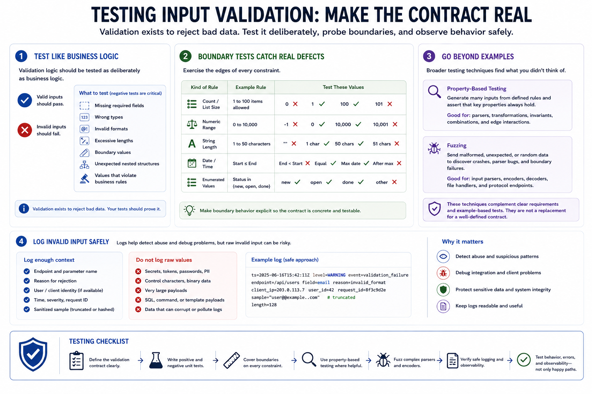

Testing Validation Logic
Connecting to LMS... Progress: in progress

Narration
Validation logic should be tested as deliberately as business logic. Unit tests should confirm that valid inputs pass and invalid inputs fail. Negative tests are especially important because validation exists to reject bad data. Test missing fields, wrong types, invalid formats, excessive lengths, boundary values, unexpected nested structures, and values that violate business rules.
Boundary tests catch many real defects. If a field allows one to one hundred items, test zero, one, one hundred, and one hundred one. If a number has a maximum, test the maximum and the value just above it. If a string has a length limit, test empty strings, maximum length, and overlong input. These tests make the contract concrete.
Property-based testing and fuzzing, at a high level, can help discover cases developers did not think to write manually. They are not replacements for clear requirements, but they can expose parser issues, encoding surprises, type confusion, and boundary failures. Use them where input parsing or transformation is complex enough to justify broader exploration.
Invalid input should be logged safely. Logs can help detect abuse and debug integration problems, but raw invalid input may contain secrets, personal data, control characters, or payloads that make logs hard to read. Log enough context to support troubleshooting and monitoring, but avoid storing sensitive or dangerous raw values unnecessarily. Testing should cover behavior, errors, and observability, not only happy paths.